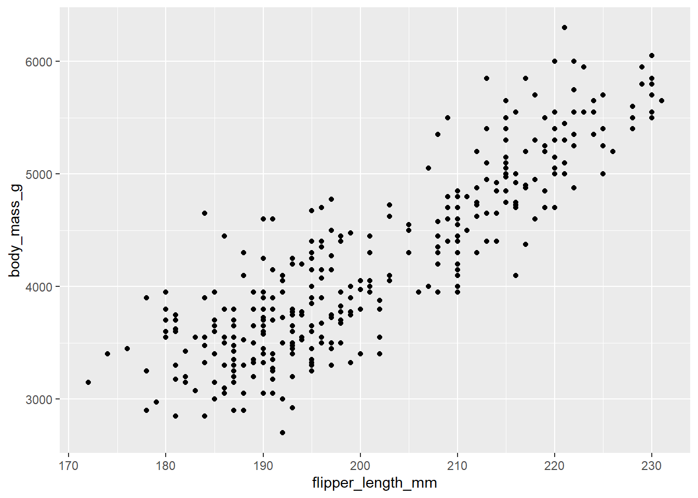
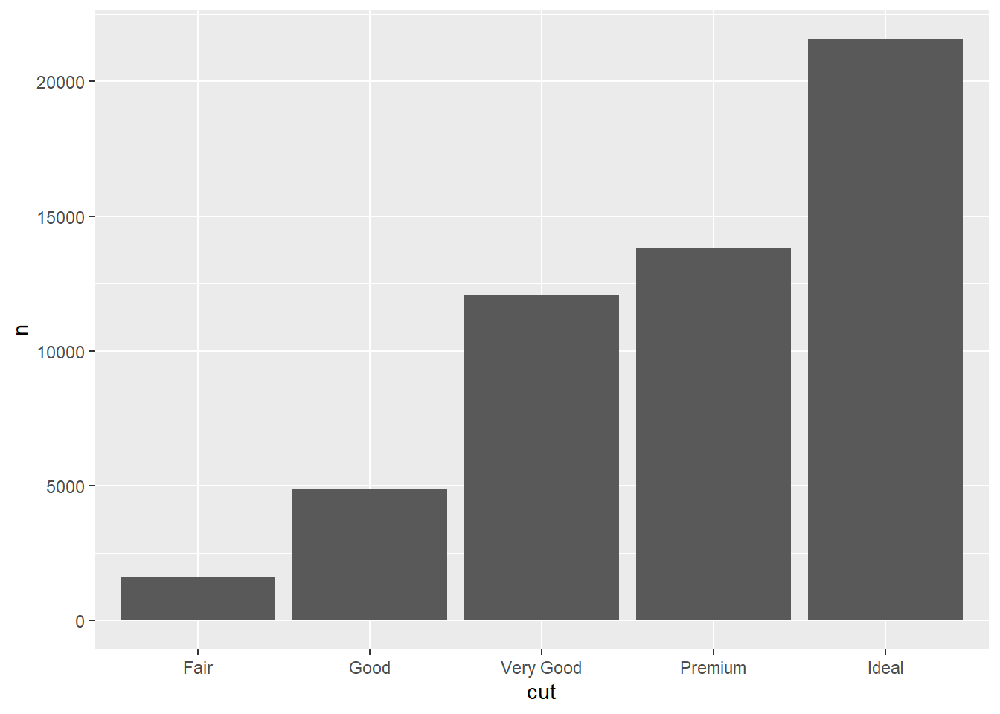
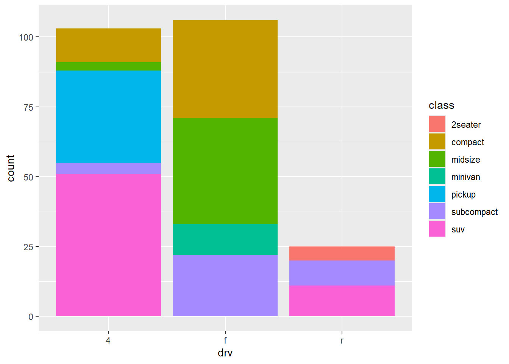
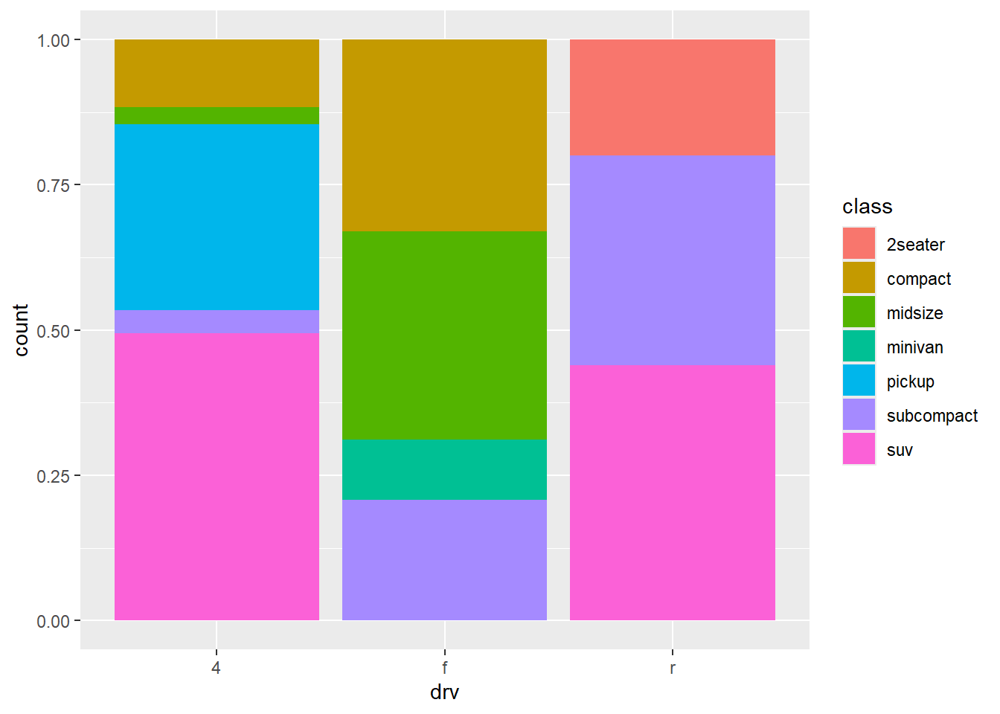
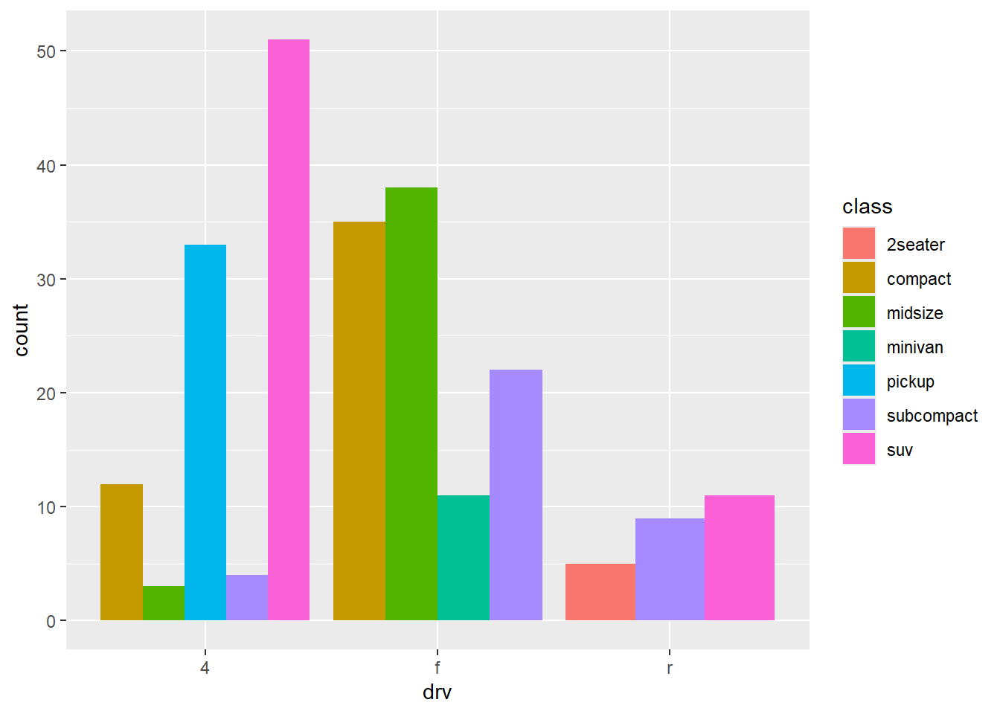
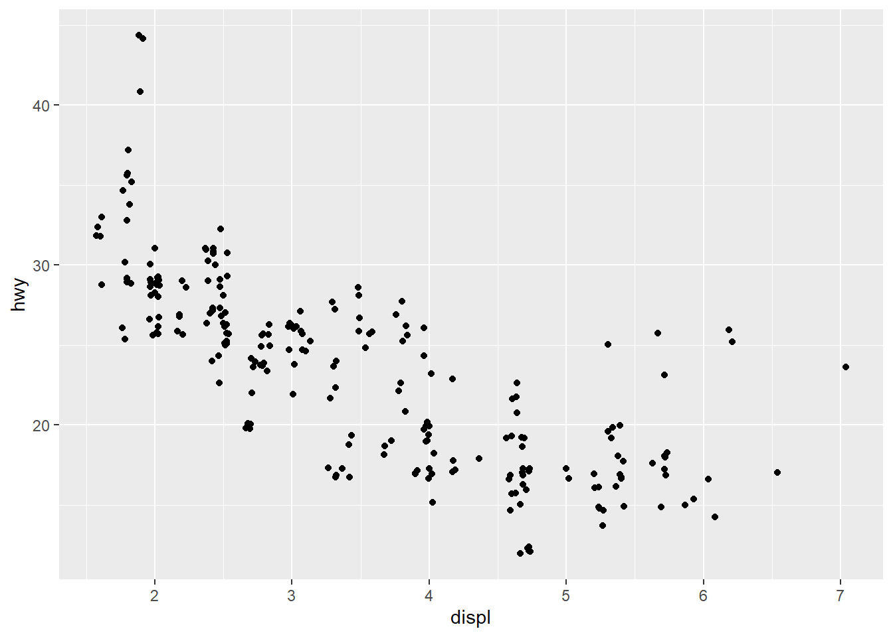
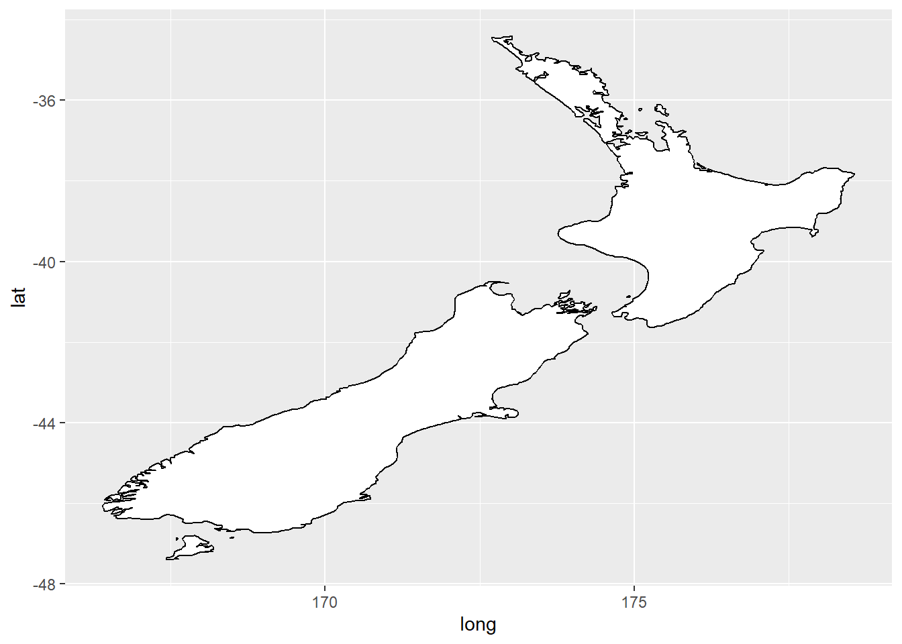
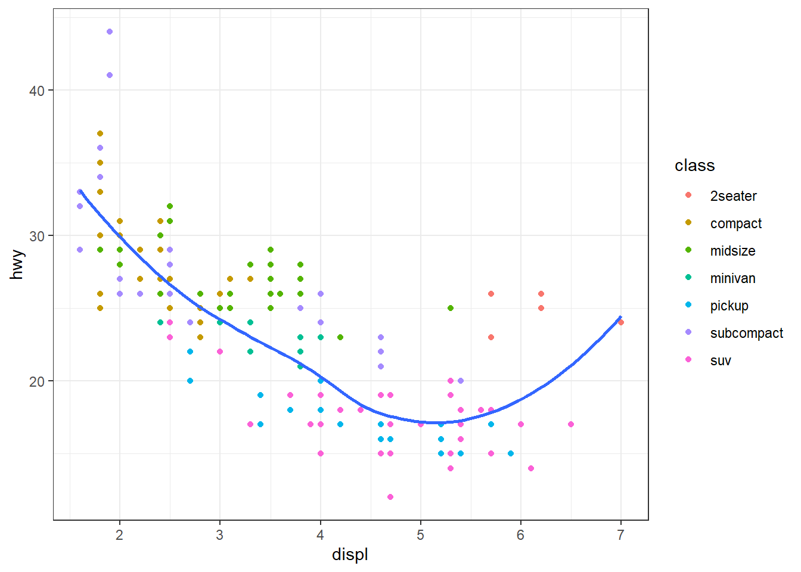
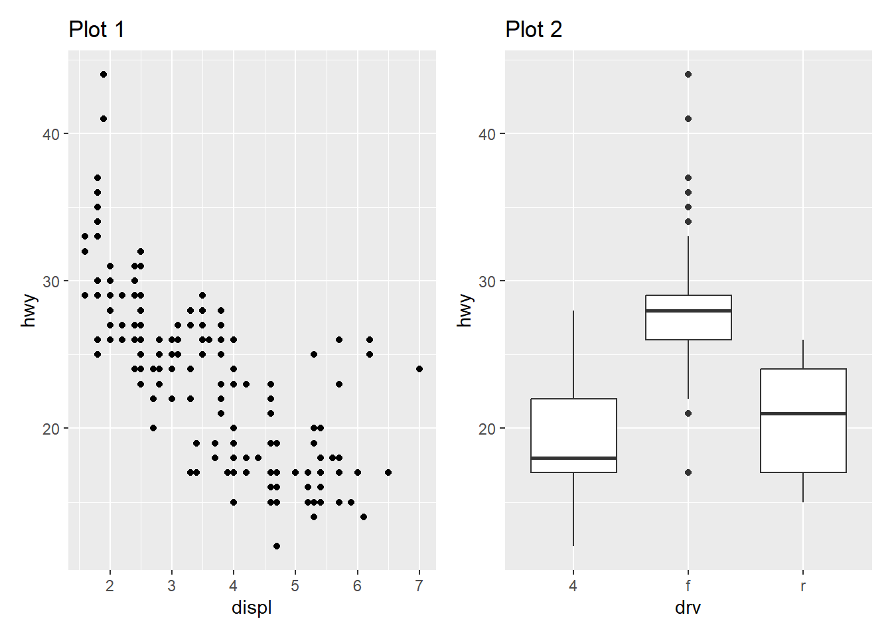

ggplot(data = penguins)
The best place to continue learning about ggplot is the ggplot2 book: ggplot2: Elegant graphics for data analysis.
The grammar of graphics is a template made of seven parameters (the bracketed words that appear in the template) for building plots. The grammar of graphics is based on the insight that you can uniquely describe any plot as a combination of a dataset, a geom, a set of mappings, a stat, a position adjustment, a coordinate system, a faceting scheme, and a theme.
ggplot(data = <DATA>) +
<GEOM_FUNCTION>(
mapping = aes(<MAPPINGS>),
stat = <STAT>,
position = <POSITION>
) +
<COORDINATE_FUNCTION> +
<FACET_FUNCTION>To build a basic plot from scratch:
You could start with a dataset and then transform it into the information that you want to display (with a stat).
Next, you could choose a geometric object to represent each observation in the transformed data.
You could then use the aesthetic properties of the geoms to represent variables in the data. You would map the values of each variable to the levels of an aesthetic.
You’d then select a coordinate system to place the geoms into, using the location of the objects (which is itself an aesthetic property) to display the values of the x and y variables.
You could further adjust the positions of the geoms within the coordinate system (a position adjustment) or split the graph into subplots (faceting).
You could also extend the plot by adding one or more additional layers, where each additional layer uses a data set, a geom, a set of mappings, a stat, and a position adjustment.
To learn more about the theoretical underpinnings that describes the theory of ggplot2 in detail, click here: The Layered Grammar of Graphics.
With ggplot2, you begin a plot with the function ggplot(), defining a plot object that you then add layers to.
The first argument of ggplot() is the dataset to use in the graph and so ggplot(data = penguins) creates an empty graph that is primed to display the penguins data, but since we haven’t told it how to visualize it yet, for now it’s empty (it’s like an empty canvas you’ll paint the remaining layers of your plot onto).
Example:
ggplot(data = penguins)
Next, we need to tell ggplot() how the information from our data will be visually represented. The mapping argument of the ggplot() function defines how variables in your dataset are mapped to visual properties (aesthetics) of your plot.
The mapping argument is always defined in the aes() function, and the x and yarguments of aes() specify which variables to map to the x and y axes.
Example:
ggplot(data = penguins,
mapping = aes(x = flipper_length_mm,
y = body_mass_g))
Our empty canvas now has more structure – it’s clear where flipper lengths will be displayed (on the x-axis) and where body masses will be displayed (on the y-axis). But the penguins themselves are not yet on the plot. This is because we have not yet determine how to represent the observations from our dataframe on our plot.
To do so, we need to define a geom: the geometrical object that a plot uses to represent data. These geometric objects are made available in ggplot2 with functions that start with geom_.
For example, bar charts use geom_bar(), line charts use geom_line(), boxplots use geom_boxplot(), scatterplots use geom_point(), and so on.
Example:
ggplot(data = penguins,
mapping = aes(x = flipper_length_mm,
y = body_mass_g)) +
geom_point()
Note: One common problem when creating ggplot2 graphics is to put the + in the wrong place: it has to come at the end of the line, not the start.
You can rewrite the previous plot more concisely:
ggplot(penguins, aes(x = flipper_length_mm,
y = body_mass_g)) +
geom_point()
Or using the pipe, |>:
penguins |>
ggplot(aes(x = flipper_length_mm,
y = body_mass_g)) +
geom_point()
Now we have something that looks like what we might think of as a “scatterplot”.
You can also set the visual properties of your geom manually as an argument of your geom function (outside of aes()) instead of relying on a variable mapping to determine the appearance. For example, we can make all of the points in our plot blue:
ggplot(mpg, aes(x = displ, y = hwy)) +
geom_point(color = "blue")
The best place to get a comprehensive overview of all of the geoms ggplot2 offers, as well as all functions in the package, is this page: https://ggplot2.tidyverse.org/reference.
To learn more about any single geom, use the help (e.g., ?geom_smooth).
See also https://exts.ggplot2.tidyverse.org/gallery/ for a sampling of community made geoms.
You will we need to modify the aesthetic mapping, inside of aes().
Example:
ggplot(data = penguins,
mapping = aes(x = flipper_length_mm,
y = body_mass_g,
color = species)) +
geom_point()
Once you map an aesthetic, ggplot2 takes care of the rest. It selects a reasonable scale to use with the aesthetic, and it constructs a legend that explains the mapping between levels and values. For x and y aesthetics, ggplot2 does not create a legend, but it creates an axis line with tick marks and a label. The axis line provides the same information as a legend; it explains the mapping between locations and values.
When a categorical variable is mapped to an aesthetic, ggplot2 will automatically assign a unique value of the aesthetic (here a unique color) to each unique level of the variable (each of the three species), a process known as scaling. ggplot2 will also add a legend that explains which values correspond to which levels.
Now let’s add one more layer: a smooth curve displaying the relationship between body mass and flipper length. Since this is a new geometric object representing our data, we will add a new geom as a layer on top of our point geom: geom_smooth(). And we will specify that we want to draw the line of best fit based on a linear model with method = "lm".
Example:
ggplot(data = penguins,
mapping = aes(x = flipper_length_mm,
y = body_mass_g,
color = species)) +
geom_point() +
geom_smooth(method = "lm")`geom_smooth()` using formula = 'y ~ x'
When aesthetic mappings are defined in ggplot(), at the global level, they’re passed down to each of the subsequent geom layers of the plot. However, each geom function in ggplot2 can also take a mapping argument, which allows for aesthetic mappings at the local level that are added to those inherited from the global level. In other words, if you place mappings in a geom function, ggplot2 will treat them as local mappings for the layer. It will use these mappings to extend or overwrite the global mappings for that layer only. This makes it possible to display different aesthetics in different layers.
Example:
ggplot(data = penguins,
mapping = aes(x = flipper_length_mm,
y = body_mass_g)) +
geom_point(mapping = aes(color = species)) +
geom_smooth(method = "lm")`geom_smooth()` using formula = 'y ~ x'
Note that since we want points to be colored based on species but don’t want the lines to be separated out for them, we should specify color = species for geom_point() only.
You can specify different data for each layer. Here, we use red points as well as open circles to highlight two-seater cars. The local data argument in geom_point() overrides the global data argument in ggplot() for that layer only.
Example:
ggplot(mpg, aes(x = displ, y = hwy)) +
geom_point() +
geom_point(
data = mpg |> filter(class == "2seater"),
color = "red"
) +
geom_point(
data = mpg |> filter(class == "2seater"),
shape = "circle open", size = 3, color = "red"
)
It’s generally not a good idea to represent information using only colors on a plot, as people perceive colors differently due to color blindness or other color vision differences. Therefore, in addition to color, we can also map species to the shape aesthetic.
Example:
ggplot(
data = penguins,
mapping = aes(x = flipper_length_mm, y = body_mass_g)
) +
geom_point(mapping = aes(color = species, shape = species)) +
geom_smooth(method = "lm")`geom_smooth()` using formula = 'y ~ x'
You can learn more about all possible aesthetic mappings in the aesthetic specifications vignette at https://ggplot2.tidyverse.org/articles/ggplot2-specs.html. Remember that the specific aesthetics you can use for a plot depend on the geom you use to represent the data.
Many graphs, like scatterplots, plot the raw values of a dataset. Other graphs, like bar charts, calculate new values to plot. The algorithm used to calculate new values for a graph is called a stat, short for statistical transformation.
You can figure out which stat a geom uses by inspecting the default value for the stat argument. For example, ?geom_bar shows that the default value for stat is “count”, which means that geom_bar() uses stat_count(). To find the possible variables that can be computed by the stat, look for the section titled “computed variables” in the help for geom_bar().
Every geom has a default stat; and every stat has a default geom. This means that you can typically use geoms without worrying about the underlying statistical transformation. However, there are three reasons why you might need to use a stat explicitly:
You might want to override the default stat. In the following example we change the stat of geom_bar() from count (the default) to identity. This lets us map the height of the bars to the raw values of a y variable.
Example:
diamonds |>
count(cut) |>
ggplot(aes(x = cut, y = n)) +
geom_bar(stat = "identity")
You might want to override the default mapping from transformed variables to aesthetics.
Example:
# Display a bar chart of proportions, rather than counts
ggplot(diamonds, aes(x = cut, y = after_stat(prop), group = 1)) +
geom_bar()
You might want to focus on the statistical transformation in your code. For example, you might use stat_summary(), which summarizes the y values for each unique x value, to draw attention to the summary that you’re computing:
Example:
ggplot(diamonds) +
stat_summary(
aes(x = cut, y = depth),
fun.min = min,
fun.max = max,
fun = median
)
You can color a bar chart using either the color aesthetic, or, more usefully, the fill aesthetic:
Example:
ggplot(mpg, aes(x = drv, color = drv)) +
geom_bar()
Example:
ggplot(mpg, aes(x = drv, fill = drv)) +
geom_bar()Note that if you map the fill aesthetic to another variable, like class, the bars are automatically stacked. In our example, each colored rectangle represents a combination of drv and class.
Example:
ggplot(mpg, aes(x = drv, fill = class)) +
geom_bar()
The stacking is performed automatically using the position adjustment specified by the position argument. If you don’t want a stacked bar chart, you can use one of four other options:
position = "identity": will place each object exactly where it falls in the context of the graph. See how bars overlap and why the identity position adjustment is more useful for 2d geoms, like points, where it is the default.
ggplot(mpg, aes(x = drv, fill = class)) +
geom_bar(alpha = 1/5, position = "identity")position = "fill": works like stacking, but makes each set of stacked bars the same height. This makes it easier to compare proportions across groups.
Example:
ggplot(mpg, aes(x = drv, fill = class)) +
geom_bar(position = "fill")
position = "dodge": places overlapping objects directly beside one another. This makes it easier to compare individual values.
Example:
ggplot(mpg, aes(x = drv, fill = class)) +
geom_bar(position = "dodge")
position = "jitter": adds a small amount of random noise to each point in a scatterplot. This spreads the points out to solve the problem of overplotting, which makes it difficult to see the distribution of the data.
ggplot(mpg, aes(x = displ, y = hwy)) +
geom_point(position = "jitter")
The default coordinate system is the Cartesian coordinate system where the x and y positions act independently to determine the location of each point.
There are two other coordinate systems that are occasionally helpful.
coord_quickmap(): sets the aspect ratio correctly for plotting spatial data with ggplot2. See more in the Maps chapter of the ggplot2 book.
Example:
library(maps)
nz <- map_data("nz")
ggplot(nz, aes(x = long, y = lat, group = group)) +
geom_polygon(fill = "white", color = "black")
ggplot(nz, aes(x = long, y = lat, group = group)) +
geom_polygon(fill = "white", color = "black") +
coord_quickmap()
coord_polar(): uses polar coordinates. Polar coordinates can reveal interesting connections between a bar chart and a Coxcomb chart.
Example:
bar <- ggplot(data = diamonds) +
geom_bar(
mapping = aes(x = clarity, fill = clarity),
show.legend = FALSE,
width = 1
) +
theme(aspect.ratio = 1)
bar + coord_flip()bar + coord_polar()Facets splits a plot into subplots that each display one subset of the data based on a categorical variable.
Example:
ggplot(mpg, aes(x = displ, y = hwy)) +
geom_point() +
facet_wrap(~cyl)
To facet your plot with the combination of two variables, switch from facet_wrap() to facet_grid(). The first argument of facet_grid() is also a formula, but now it’s a double sided formula: rows ~ cols.
Example:
ggplot(mpg, aes(x = displ, y = hwy)) +
geom_point() +
facet_grid(drv ~ cyl)
By default each of the facets share the same scale and range for x and y axes. This is useful when you want to compare data across facets but it can be limiting when you want to visualize the relationship within each facet better. Setting the scales argument in a faceting function to free_x will allow for different scales of x-axis across columns, free_y will allow for different scales on y-axis across rows, and free will allow both.
Example:
ggplot(mpg, aes(x = displ, y = hwy)) +
geom_point() +
facet_grid(drv ~ cyl, scales = "free")And finally, we can improve the labels of our plot using the labs() function in a new layer:
title, adds a title.subtitle, adds a subtitle to the plot.x, is the x-axis label.y, is the y-axis label.color and shape define the label for the legend.In addition, we can improve the color palette to be colorblind safe with the scale_color_colorblind() function from the ggthemes package.
Example:
ggplot(
data = penguins,
mapping = aes(x = flipper_length_mm, y = body_mass_g)
) +
geom_point(aes(color = species, shape = species)) +
geom_smooth(method = "lm") +
labs(
title = "Body mass and flipper length",
subtitle = "Dimensions for Adelie, Chinstrap, and Gentoo Penguins",
x = "Flipper length (mm)", y = "Body mass (g)",
color = "Species", shape = "Species"
) +
scale_color_colorblind()`geom_smooth()` using formula = 'y ~ x'
The purpose of a plot title is to summarize the main finding. Avoid titles that just describe what the plot is (e.g. “Fuel efficcieny generally decreases with engine size”).
It’s possible to use mathematical equations instead of text strings. Just switch ” ” out for quote() and read about the available options in ?plotmath:
Example:
ggplot(df, aes(x, y)) +
geom_point() +
labs(
x = quote(x[i]),
y = quote(sum(x[i] ^ 2, i == 1, n))
)gplot2 includes the eight themes, with theme_gray() as the default. Many more are included in add-on packages like ggthemes (https://jrnold.github.io/ggthemes). You can also create your own themes, if you are trying to match a particular corporate or journal style.
Example:
ggplot(mpg, aes(x = displ, y = hwy)) +
geom_point(aes(color = class)) +
geom_smooth(se = FALSE) +
theme_bw()`geom_smooth()` using method = 'loess' and formula = 'y ~ x'
It’s also possible to control individual components of each theme, like the size and color of the font used for the y axis.
Example:
...
theme(
legend.position = c(0.6, 0.7),
legend.direction = "horizontal",
legend.box.background = element_rect(color = "black"),
plot.title = element_text(face = "bold"),
plot.title.position = "plot",
plot.caption.position = "plot",
plot.caption = element_text(hjust = 0)
)For an overview of all theme() components, see help with ?theme.
What if you have multiple plots you want to lay out in a certain way? The patchwork package allows you to combine separate plots into the same graphic.
To place two plots next to each other, you can simply add them to each other. Note that you first need to create the plots and save them as objects (in the following example they’re called p1 and p2). Then, you place them next to each other with +.
library(patchwork)
p1 <- ggplot(mpg, aes(x = displ, y = hwy)) +
geom_point() +
labs(title = "Plot 1")
p2 <- ggplot(mpg, aes(x = drv, y = hwy)) +
geom_boxplot() +
labs(title = "Plot 2")
p1 + p2
You can also create complex plot layouts with patchwork. In the following, | places the p1 and p3 next to each other and / moves p2 to the next line.
p3 <- ggplot(mpg, aes(x = cty, y = hwy)) +
geom_point() +
labs(title = "Plot 3")
(p1 | p3) / p2Once you’ve made a plot, you might want to get it out of R by saving it as an image that you can use elsewhere. That’s the job of ggsave(), which will save the plot most recently created to disk:
ggplot(penguins, aes(x = flipper_length_mm, y = body_mass_g)) +
geom_point()
ggsave(filename = "penguin-plot.png")Saving 7 x 5 in imageThis will save your plot to your working directory.